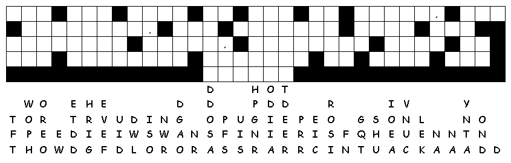

This week's lessons:Job 23:1-9, 16-17 and Psalm 22:1-15 or Amos 5:6-7, 10-15 and Psalm 90:12-17 Hebrews 4:12-16 Mark 10:17-31
|
17 And
when he was gone forth into the way, there came one running, and
kneeled to him, and asked him, Good Master, what shall I do that I
may inherit eternal life? |
and give to the poor, and thou shalt
have treasure in heaven: and come, take up the cross, and follow
me. |
26 And
they were astonished out of measure, saying among themselves, Who
then can be saved? |
What kind of answer do you think the person who asked Jesus, “What must I do to inherit eternal life” was looking for? Does he strike you as being an over-achiever, or more like someone who is looking for a way to “slack off,” believing he has already secured his admission to God’s kingdom?
Questions taken from ELCA Youth Ministries. Copyright © 2006 Evangelical Lutheran Church in America. Permission to reproduce for local use.
______________________________________________________________________________________________________________________________________________________________________________________________________________________________________________________________________________________________________________________________________________________________________________________________________________________________________________________________________________________________________________________________________________________________________________________________________________________________________________________________________________________________________________________________

Next Week: Job 38:1-7, (34-41) and Psalm 104:1-9, 24, 35c or Isaiah 53:4-12 and Psalm 91:9-16, Hebrews 5:1-10, Mark 10:35-45